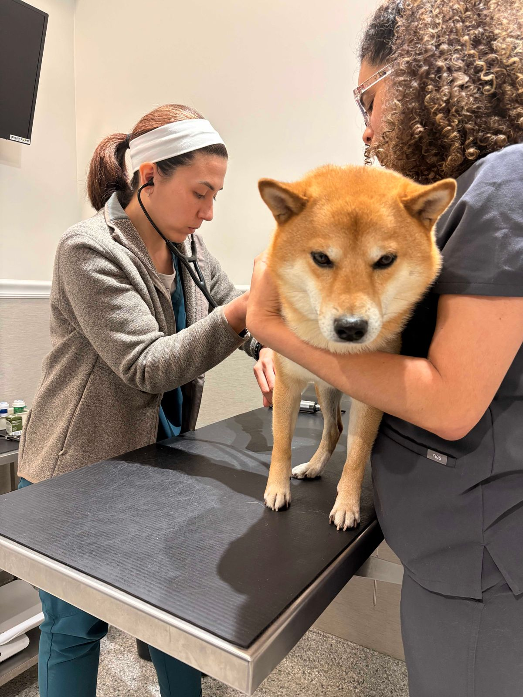
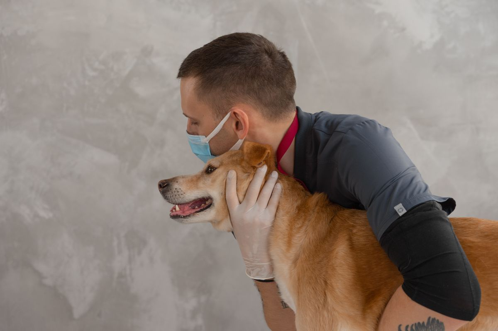
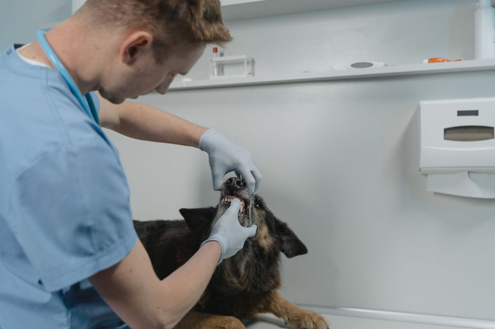

Care for your pet at Lewis & Clark Animal Hospital
A veterinary hospital in Bismarck, caring for dogs, cats, and small animals.
Wellness exams
Dogs, cats, and small animals.
Vaccinations
Dental care
Surgery
Emergency and critical care
Physical rehabilitation
Cold laser therapy
Microchipping
Diet and nutritional guidance
Gallery



All gallery photos are stock photos, labeled as such. They show veterinary check-ups, not this hospital's patients or staff.
Contact
Lewis & Clark Animal Hospital serves Bismarck, ND. Questions? Call (701) 751-2501.